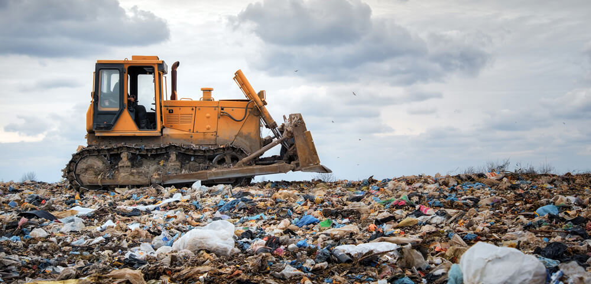

| Year | Jurisdiction | Category | Type | Classification | Total type | Stream | Management | Fate | Tonnes | Core or non-core | Sub-stream | Cat. order | Cat. no. | Type order | Type no. | ...17 |
|---|---|---|---|---|---|---|---|---|---|---|---|---|---|---|---|---|
| 2020-2021 | ACT | Biosolids | Biosolids | Type | NA | C&I | Other disposal | Disposal | 20186 | Core waste | 03 C&I core | 03 Organics | C3 | 14 Biosolids | T14 | NA |
| 2020-2021 | ACT | Biosolids | Biosolids | Type | NA | C&I | Recycling | Recycling | 0 | Core waste | 03 C&I core | 03 Organics | C3 | 14 Biosolids | T14 | NA |
| 2020-2021 | ACT | Biosolids | Biosolids | Type | NA | Total | Other disposal | Disposal | 20186 | Core waste | 09 Total | 03 Organics | C3 | 14 Biosolids | T14 | NA |
| 2020-2021 | ACT | Biosolids | Biosolids | Type | NA | Total | Recycling | Recycling | 0 | Core waste | 09 Total | 03 Organics | C3 | 14 Biosolids | T14 | NA |
| 2020-2021 | ACT | Biosolids | NA | Category | NA | C&I | Other disposal | Disposal | 20186 | Core waste | 03 C&I core | 03 Organics | C3 | NA | NA | NA |
| 2020-2021 | ACT | Biosolids | NA | Category | NA | C&I | Recycling | Recycling | 0 | Core waste | 03 C&I core | 03 Organics | C3 | NA | NA | NA |

1 Introduction
Some of the critical factors when assessing the national waste generation problem of Australia can be delineated as follows:
- High per capita waste generation due to the consumer culture leading to the high usage of single use packaging.
- High dependence on landfills which result in soil, water and air pollution.
- Uneven waste management infrastructure across the country.
- Heavy polluting industries such as mining and the steel industry.
- Electronic waste (e-waste) is a growing problem in Australia, with the increasing use of electronic devices and appliances. Managing e-waste responsibly is a complex issue due to the - hazardous materials contained in electronic products.
Disclaimer
The following analysis is a reproducible code of the winning submission at the annual datathon 2023 organised by the Monash Data Science Society. Please find a copy of the final presentation here.
2 How does our data look like ?
Let us try to get a glimpse of the data we will be dealing with.
As we can observe from Table 1, our dataset contains a total of 17 variables and is fairly unclean. Hence, we will be cleaning the data and make it fit for exploratory data analysis.
3 How do we clean this data ?
Some of the areas which require cleaning are:
- The variable names need to be cleaned such that they are of lower cases and with no special characters.
- Clean the “year” variable by separating it into start and end year. Eg: “2014-2020” as 2014 and 2020 in two separate columns.
df_waste <- clean_names(df) # Clean the variable names
df_waste[c("start_year","end_year")] <- (str_split_fixed(df_waste$year,"-",2)) # Separating the "-" in the years
df_waste$start_year <- as.numeric(df_waste$start_year)
df_waste$end_year <- as.numeric(df_waste$end_year)
df_waste<- df_waste%>% select(-year) 4 Let us now explore the data through visualisations
4.1 Which are the states with highest producing waste ?

We can observe that:
- WA leads the way in waste generation followed by NSW and QLD.
- While this maybe counter intuitive as WA has a considerably smaller population (2.67 million) when compared to NSW (8.16 million) and QLD (5.185 million), however, due to the presence of heavy industries such as mining, petroleum and chemicals, a significant amount of waste is generated in WA.
- The most common form of waste generated from each state are observed to be ash and rubble.
4.2 What are the dominating waste types in each state ?

- Nearly 45 % of Australia’s waste is generated from the mining industry.
- WA is the leading producer of waste from the mining industry. These include iron, nickel, coal and lithium mines.
- Based on the Australian treasury, the mining industry adds about 270 billion $ every year, making it a significant addition to the Australian economy.
- WA’s reliance on the mining industry and the nature of its large-scale pollution could be the reason why despite a low population, the state is the highest contributor to the waste generation
4.3 Is hazardous waste generation on the rise across Australia ?

Based on Figure 1, we can observe that:
- NSW accounts for the highest hazardous waste in the whole of Australia with close to 8.5 MT. The hazardous wastes are on a rising trend.
- QLD is observed to record constant generation of hazardous waste each year with approximate 6 MT.
- VIC is observed to record a rising trend of hazardous waste in recent years with close to 5.75 MT in 2021.
4.4 What are the waste management techniques applied in the top 3 hazardous waste generating states ?

Based on types of waste management techniques as illustrated by Figure 2 and Figure 3, we observe the following:
- Majority of the hazardous waste is disposed in the landfills.
- This is concerning as these wastes end up polluting the water bodies and the underground potable water, consequently leading to loss of marine lives.
- There is still a technology gap to be able to effectively harness the hazardous waste for producing energy.
5 What is the composition of the hazardous waste generated ?

Upon diving deeper into what constitutes these hazardous wastes from Figure 4, we could observe that contaminated soils are the largest source followed by asbestos.
6 What is the source of these hazardous wastes ?

Based on our understanding of Figure 5, Asbestos has been observed to be clearly the differentiating factor for NSW hazardous waste generation when compared to QLD and VIC with close to equal contribution from the commercial & industrial and construction & demolition.
How is Asbestos handled ?

Figure 6 illustrates the type of waste management techniques employed in each of the 3 states. Our observations are as follows:
- We observe that Asbestos is especially harmful for the environment since it is non-biodegradable in nature.
- This inevitable leads to bigger landfills and consequent rise in land, water and air pollution.
- Asbestos is additionally carcinogenic in nature, thereby causing direct health risks to lives.
7 Key recommendations üí°
- While adopting sustainable practices is the need of the hour, it is especially important to address the processing of hazardous wastes.
- Hazardous wastes are seldom bio-degradable and need innovative techniques to be converted into a usable form such as energy.
- Higher allocation of funds for R&D to develop ways to harness energy from these wastes can be a big game changer for Australian states. Eg: Carbon Capture Utilisation in steel industries developed by ArcelorMittal Belgium.
- Governments in each state should be wary of industries using hazardous materials such as Asbestos in construction or manufacturing which can only be dumped in landfills that lead to various types of pollution. Sanctions and penalties imposed can greatly motivate construction and industries to explore alternative and sustainable materials.